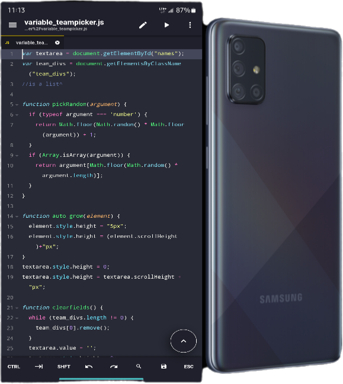

Back in 2022, when I was still in school, my teacher gave us a spare-time challenge: create a spreadsheet that could randomly generate teams for volleyball, baseball, or ball hockey. No one ever took it up. But later, I realized something—spreadsheets can be clunky, especially for something like this. A website would be a much better solution.

That idea stuck with me, and in 2023–2024, I built Teampicker, a minimalistic, no-fuss team generator. My goal was simplicity—no unnecessary features, just a clean and efficient tool that works. I also made sure it was mobile-friendly because, well, I built the entire thing on my phone—a Samsung Galaxy A71. I used Acode for coding and Eruda for mobile browser dev tools.
Teampicker may be a lightweight app, but it gets the job done. It’s proof that sometimes, the simplest solutions are the best ones.